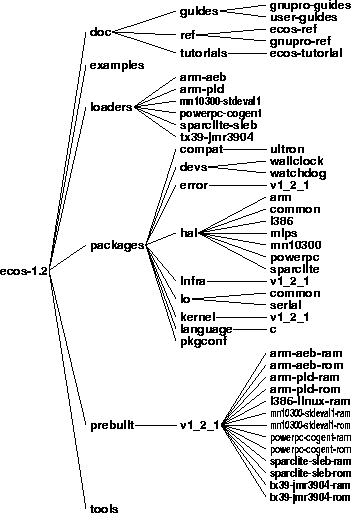

Each of the file trees involved in eCos development has a different role.
The eCos component repository contains directories for all the packages that are shipped with eCos or provided by third parties.
The component repository should not be modified as part of application development, not even for the purpose of changing configuration options. The Configuration Tool copies all configuration header files to the build tree before it changes any configuration option. When configuring manually, you should always make modifications in the build tree after running pkgconf.tcl (see Chapter 7).
Figure 4-1. Component repository

The component respository is the master copy of source code for all system and third party components. It also contains some utilities needed to build the system, such as pkgconf.tcl.
You modify it by importing new versions of packages from a distribution.
Files in the component repository should only be edited manually as determined by the component maintainer.
User application source code should not go into the component repository.
The top level HTML file for the eCos Reference Manual.
Prebuilt tests for the five supported platforms, and the synthetic Linux target.
One of the example programs.
The Tcl program which is used to create a build tree and the makefile.
Implementation of the hyperbolic tangent function in the standard math library.
A file with make rules, used by the makefile.